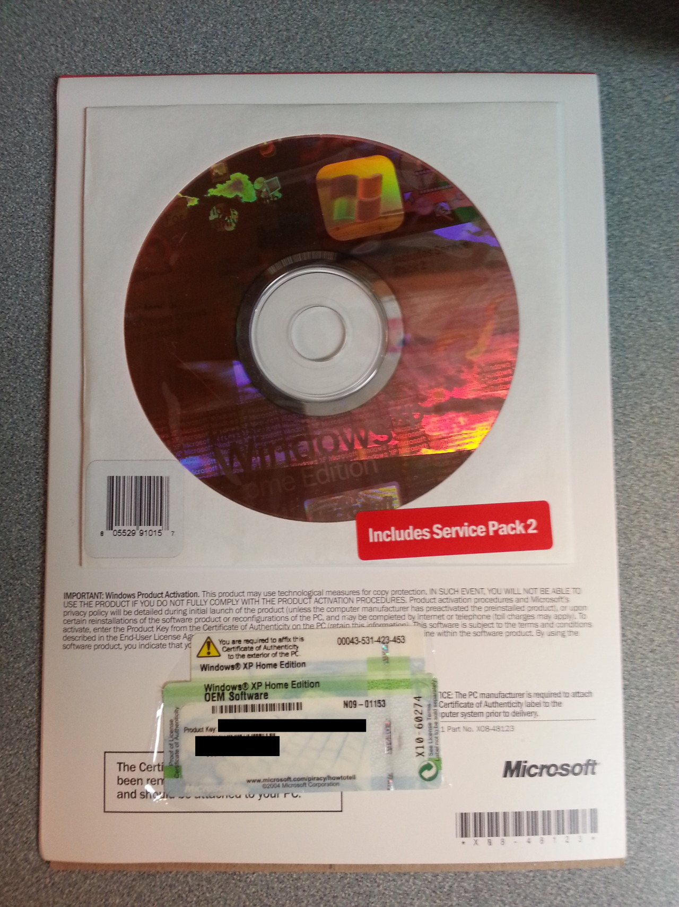

My dad casually has three of these sitting around, still wrapped in plastic and unopened, unused. What’s surprising is that he actually found a use for one today (my sister wants to run XP in a virtual machine so she can play fifteen-year-old computer games).
Technology marches on.